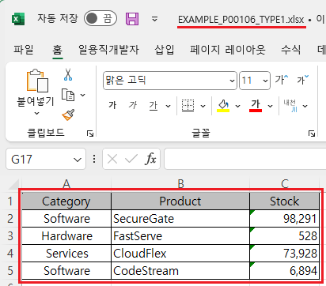
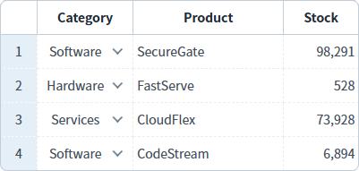
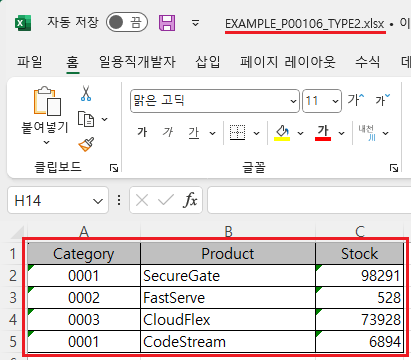
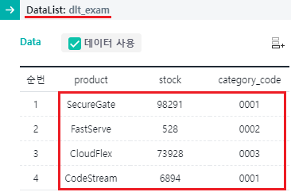

GridView의 'advancedExcelDownload' 메소드의 첫 번째 인자인 JSON 객체의 'type'을 사용하여, GridView와 연결된 DataList를 엑셀로 다운로드하는 예제입니다. 'type' 속성은 데이터의 출처를 결정합니다. 설정을 통해 DataList의 데이터 또는 GridView에 출력된 데이터로 지정할 수 있습니다. 기본 설정은 GridView에 표시된 데이터로 다운로드됩니다.
엑셀 다운로드하기 - 기본 동작
엑셀 다운로드하기 - DataList의 값으로 다운로드
1
STEP 1: '엑셀 다운로드 - 기본' 버튼을 클릭합니다.
2
STEP 2: 실행된 결과를 확인합니다.
다운로드 된 엑셀 파일 "EXAMPLE_P00106_TYPE1.xlsx"을 실행합니다. GridView에 출력된 데이터와 동일하게 엑셀에 출력됩니다.
Image 1.다운로드된 엑셀(2021) 파일 예시

Image 2.GridView 예시

1
STEP 1: '엑셀 다운로드 - DataList의 값을 다운로드' 버튼을 클릭합니다.
2
STEP 2: 실행된 결과를 확인합니다.
다운로드 된 엑셀 파일 "EXAMPLE_P00106_TYPE2.xlsx"을 실행합니다. DataList의 데이터와 동일하게 엑셀에 출력됩니다.
Image 3.다운로드된 엑셀(2021) 파일 예시

Image 4.DataList의 Data 예시

GridView와 연결된 DataList 생성 및 연결 방법은 생략되었습니다.
GridView의 'advancedExcelDownload' 메소드를 사용하여 스크립트를 작성합니다. 세부 설정은 아래의 스크립트에 작성되었습니다.
Example 1.Script
//예제 파일의 스크립트 "scwin.btn_ex2_onclick"를 참고하세요. var jsnOptions = { fileName : "EXAMPLE_P00106_TYPE2.xlsx", //엑셀의 파일명 type : 0 //[default:1, 0] 사용할 데이터 출처. 0: DataList의 데이터 사용. 1: GridView에 출력된 데이터 사용 }; // type : [default: 1] 사용할 데이터. GridView 컬럼의 inputType이 SelectBox, AutoComplete, 혹은 CheckComboBox인 경우 해당. 0: value 값 사용. 1: label 값 //GridView "grd_exam1"의 엑셀 다운로드 실행 grd_exam1.advancedExcelDownload(jsnOptions);
advancedExcelDownload( options , infoArr )